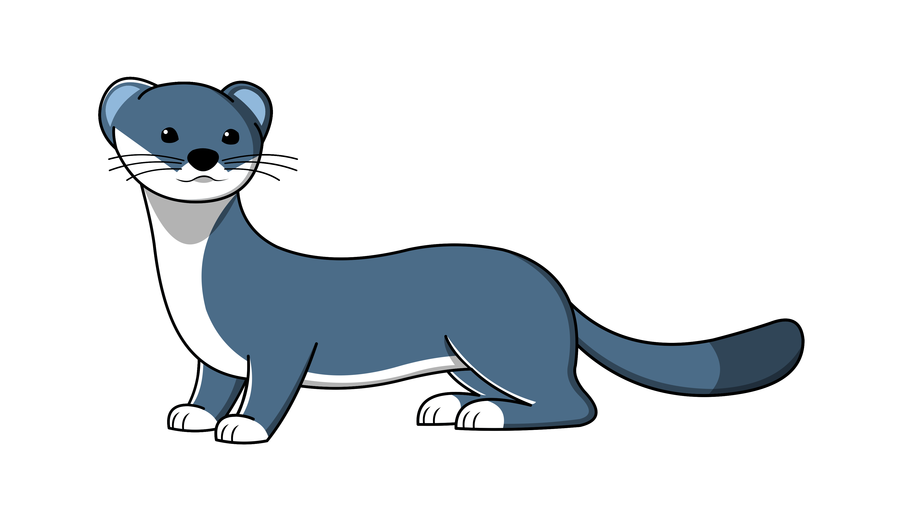

Is V orm still fast? ${v_version}
Is V orm still fast?

${v_version}
@for orm_stmt_kind in orm_stmt_kinds
${orm_stmt_kind} benchmark
@for number in 0..11
${int(number*(f64(max_benchmark[orm_stmt_kind])/10))} ns
@end
| Benchmark name |
max. |
10% max. |
min. |
10% min. |
@for idx, name in attribute_names[orm_stmt_kind]
| @name |
@{table[orm_stmt_kind][name]["max."]}
|
@{table[orm_stmt_kind][name]["10% max."]}
|
@{table[orm_stmt_kind][name]["min."]}
|
@{table[orm_stmt_kind][name]["10% min."]}
|
@end
@end